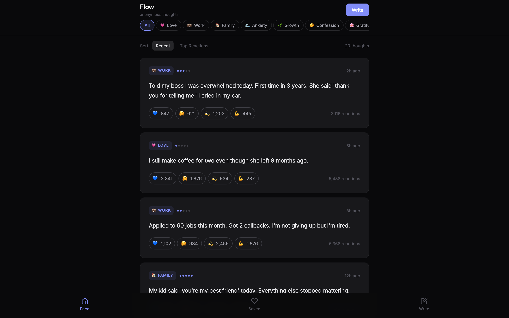
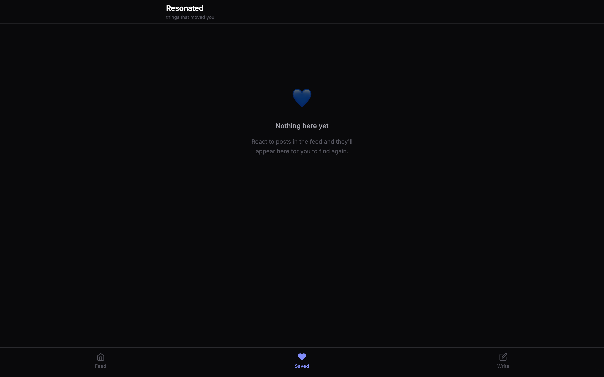
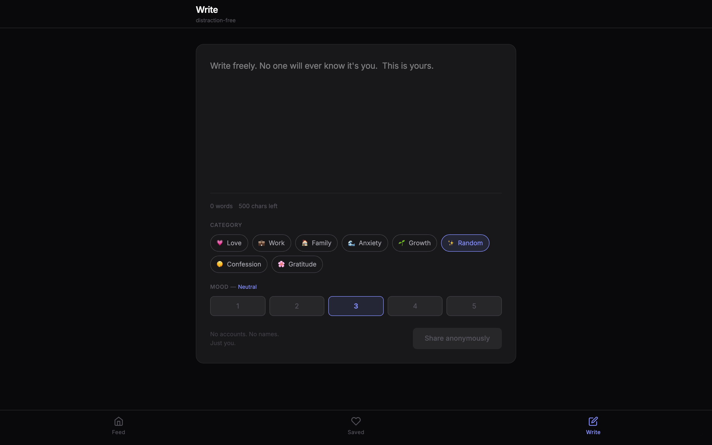

Anonymous journal and social confession feed with reactions



# Flow — Promo Kit for Affiliates
**Product:** Flow — Anonymous journal and social confession feed
**Price:** $29 one-time
**Your link:** https://whop.com/myfileapps/flow (replace with your affiliate URL)
**Commission:** 50% per sale = ~$14.50
---
## Screenshots
- `home.png` — Anonymous feed with categories, reactions (heart / hug / same / strength)
- `write.png` — Writing screen with category and mood selector
- `saved.png` — Saved posts collection
---
## Twitter / X (10 posts)
1. ```
A confession feed where you actually feel less alone.
8 categories. 4 reactions. Anonymous.
$29 one-time. {your_link}
```
2. ```
Stop journaling alone in Notion.
Flow = anonymous confession feed + private journal in one.
$29 once. {your_link}
```
3. ```
Self-hosted "Whisper / Vent / Reddit confessions" alternative.
Anonymous posts, 4 reaction types (heart, hug, same, strength), no DMs, no abuse.
$29. {your_link}
```
4. ```
Built a private community confession app for my Discord with this $29 template.
Engagement is wild. People needed a place to vent.
{your_link}
```
5. ```
- 8 categories (love, work, family, anxiety, growth, gratitude, confession, random)
- 4 reactions
- Mood scale 1-5
- Anonymous by default
- Save posts that hit
$29 one-time. {your_link}
```
6. ```
Indie devs: emotional / wellness apps are a goldmine.
This template is your starting point. $29.
{your_link}
```
7. ```
Best $29 mental wellness app I've found:
A safe place to vent + read others. Self-hosted.
{your_link}
```
8. ```
Flow template — full Next.js source, $29 one-time.
Anonymous confession feed with 4 reactions, 8 categories, mood tracking.
{your_link}
```
9. ```
Tired of "anonymous" apps that aren't really anonymous?
This one is. Self-hosted. localStorage. Your data, your code.
$29 once. {your_link}
```
10. ```
The honest internet died.
This template tries to bring it back. Anonymous. Reaction-only. No comments. $29.
{your_link}
```
---
## Reddit (5 posts)
### r/SideProject
```
Title: Built an anonymous community confession app with this $29 template
Spent $29 on Flow — full Next.js source. Anonymous posts, 8 categories (love / work / family / anxiety / growth / random / confession / gratitude), 4 reactions (heart / hug / same / strength).
Used it for my Discord community. People are way more open without a username attached.
{your_link}
```
### r/Entrepreneur
```
Title: $29 one-time anonymous social template — wellness niche
Just used Flow — full source. For anyone building in mental wellness / community / journaling, this is a clean foundation.
Anonymous posts, reactions, no comments (intentionally — kills toxicity). Self-hosted.
{your_link}
```
### r/journaling
```
Title: Self-hosted anonymous journal + social vent feed — $29 one-time
For folks who want to journal but also feel less alone:
Flow is a Next.js template. Write anonymously. Pick a category. React to others' posts. No comments, no DMs, no usernames.
{your_link}
```
### r/MentalHealth
```
Title: A safer alternative to Whisper / Vent — $29 self-hosted
Found Flow template. Anonymous, reactions-only (no comments → no abuse), categories that matter (anxiety, growth, gratitude, etc.). Self-hosted, your data stays in your browser.
{your_link}
```
### r/webdev
```
Title: Anonymous social feed template (Next.js + TS) — $29 one-time
Clean code:
- Anonymous posts (mood 1-5, category, content)
- 4 reaction types
- Categories with icons
- Sort by Recent / Top Reactions
- Saved posts
- Write screen with character count
- 20 preloaded posts to bootstrap engagement
{your_link}
```
---
## Telegram / Discord DM (3 templates)
### Cold DM #1
```
Hey — saw you run a community / mental wellness niche.
Found a $29 one-time anonymous confession feed template. 8 categories, 4 reactions, no comments. Full Next.js source.
{your_link}
```
### Cold DM #2
```
Quick one — I get 50% commission if you grab this $29 anonymous social template.
It's solid: anonymous posts, mood scale, 4 reaction types, no comments (intentional — no toxicity). Self-hosted.
{your_link}
```
### Repost in groups
```
For community builders / mental wellness niches:
Flow template — $29 one-time
Anonymous confession feed with reactions
Self-hosted, your community keeps the data
{your_link}
```
---
## TikTok / Reels script (30s)
```
[Hook 0-3s — show feed with confession posts]
"Why does the internet feel less honest every year?"
[3-10s — show categories and reactions]
"This template is anonymous. 8 categories. 4 reactions. No comments."
[10-20s — show write screen with category picker]
"Pick a category, share what you're feeling, hit publish."
[20-27s — show saved posts]
"Save the ones that hit. Read them when you need to."
[27-30s — CTA]
"$29 one-time. Link in bio."
```
---
## Hashtags
```
#mentalwellness #anonymous #journaling #confession #community #indiedev #saas #nextjs #typescript #onetimepurchase #microsaas #mindfulness #vent
```
---
## Where to post (priority order)
1. **Reddit** — r/MentalHealth, r/journaling, r/SideProject, r/Anxiety
2. **TikTok** — "POV: writing my anonymous confessions"
3. **Twitter/X** — reply under "I miss the anonymous internet" threads
4. **Discord communities** — mental wellness, indie hackers
5. **Telegram** — wellness / journaling channels
6. **Indie Hackers** — show & tell with the feed screenshot
7. **Pinterest** — mental wellness boards